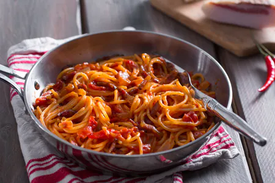

Spaghetti Amatriciana

Ricetta
Spaghetti all'amatriciana, l'invito a nozze per tutti gli appassionati di cucina laziale! Vi presentiamo la vera ricetta dell'amatriciana codificata e certificata dal Comune di Amatrice: spaghetti, guanciale di Amatrice, pomodori pelati e Pecorino Romano DOP.
Ingredienti
721kcal per porzione
- Spaghetti 320g
- Pomodori pelati 400g
- Guanciale 150g
- Pecorino romano 75g
- Vino bianco 50g
- Olio extravergine d'oliva
- Peperoncino fresco
Preparazione
- Per preparare gli spaghetti all’amatriciana, per prima cosa mettete a bollire l'acqua per la cottura della pasta da salare poi a bollore. Potete quindi dedicarvi al condimento: prendete il guanciale, eliminate la cotenna 1 e tagliatelo a fette di circa 1 cm di spessore; riducete le fette a listarelle di circa mezzo cm 2. Fatelo rosolare a fiamma bassa per 7-8 minuti in una padella di ferro oppure di acciaio 3. Il grasso del guanciale dovrà diventare trasparente e la carne croccante.
- Mescolate spesso facendo attenzione a non bruciarlo. Quando il grasso si sarà sciolto, sfumate con il vino bianco 4, alzate la fiamma e lasciate evaporare 5. Trasferite le listarelle di guanciale in un piatto e tenetele da parte. Grattugiate il Pecorino Romano DOP 6.
- Nella stessa padella con il fondo di cottura del guanciale, ponete il peperoncino intero privato dei semi 7 e versate anche i pomodori pelati sfilacciati a mano 8. Cuocete il sugo a fiamma moderata, per circa 10 minuti e aggiustate di sale a piacere. Versate nel tegame gli spaghetti 9, cuoceteli al dente.
- Eliminate il peperoncino dal sugo, unite le listarelle di guanciale 10 e mescolate per amalgamare 11. Scolate gli spaghetti e versateli nella padella con il sugo
Back to Index